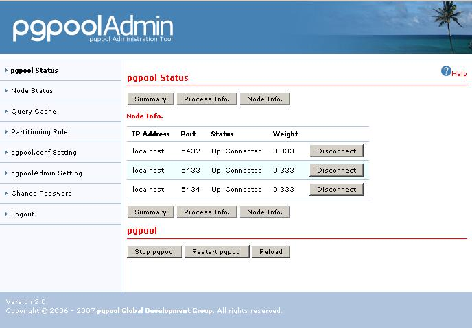
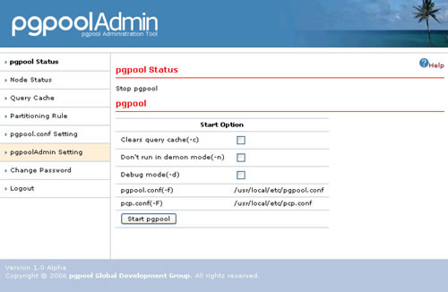
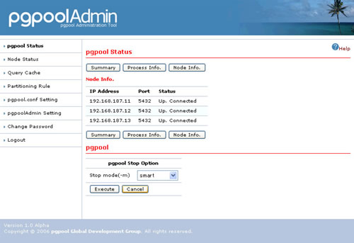
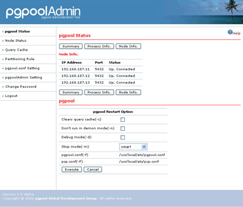

pgpool Status
Summary
On the status screen, it is possible to display it for pgpool as follows,- Summary
- Process Information
- Node Information
- Log
- Start
- Stop
- Restart
Feature

| The content of pgpool.conf is displayed. | |
In each process for pgpool,
will be shown. |
|
In each node,
will be shown. But, the button for disconnection will not be shown when pgpool is running on parallel mode. In the status,
the three states will be shown. |
|
| It is possible to display about log of pgpool when pgpool doesn't run in daemon mode(-n). | |
It is possible to start pgpool when it is stopped. The start option of pgpool
 |
|
All the processes of pgpool are stopped. The pgpool stop option is displayed, when "pgpool Stop" is pushed. There are stop mode for pgpool as follows.
 |
|
| First, all the processes of pgpool are stopped and then pgpool start process is executed. Both the start and the stop of the abovementioned items can be specified.
 |